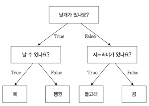
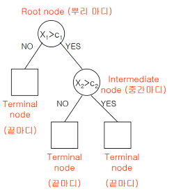
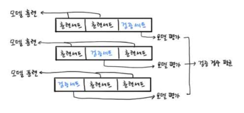
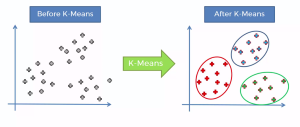
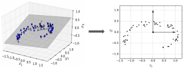
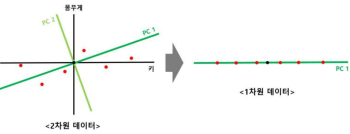

로지스틱 회귀
어떤 사건이 발생할지 말지 예측이 아니라 그 확률을 계산하는 것
특징
- 선형회귀+로지스틱 함수
- 로지스틱 함수는 시그모이드 함수와 거의 동일
- 이진 분류의 경우 확률이 0.5 이상이면
참아니면거짓 - 이진 분류는
시그모이드, 다중분류는소프트 맥스
LogisticRegression
init:C: float: 규제 정도 (로그 값) 과적합 방지max_iter: int: 경사하강법 횟수
property:classes_: 분류되는 타깃 정보 저장coef_: 분류되는 가중치intercept_: 절편값decision_function(test 데이터) -> list: 계산된Z값 (가중치+편향)predict_proba(test 데이터) -> list: 각 샘플들 예측 확률
확률적 경사 하강법
하나의 샘플을 랜덤하게 골라서 오차를 최소하는 지점
a,b를 고르는 방법 최소 오차를 찾기 위해 반복하게 되는데 이를에포크
특징
- 새로 들어온 데이터에 대해 점진적으로 학습하는
미니 배치 경사 하강법:- 훈련데이터 에서 무작위로 샘플 추출해서 하는방식
배치 경사 하강법:- 전체 훈련 데이터에서
손실함수- 로지스틱 손실 함수 (이진분류)
타깃값이 1이면: 예측확률 x 타깃 x -1타깃값이 0이면: 1 - (예측확률 x 타깃 x -1)
- 크로스 엔트로피 손실 함수 (다중분류)
엔트로피: 불확실성의 척도 (ex: 동전던지기)
- 로지스틱 손실 함수 (이진분류)
SGDClassifier
확률적 경사하강법 분류용 클래스
init:loss: "log_loss" | "hinge": 손실함수 log_loss=로지스틱 손실함수penalty: "l1" | "l2" = "l1": 규제max_iter: int: 에포크tol: number: 반복조건 (손실이tol만큼 줄어들지 않으면)
property:- partial_fit(특성, 타겟): 점진적 학습
결정 트리
설명 가능한 AI
특징
-
AI 는 뛰어난 판단 능력을 보이지만 이 판단 과정을 설명하는게 너무 어려움
-
이걸 마치 스무고개 하듯이 구조를 짜 놓는것
 
-
분할된 노드가 하나의 값을 가질 때 까지 반복 분활
-
결정 트리는 표준화 할 필요 없다
장단점
- 분류시 계산이 빠르고 쉬움 +
- 예측 결과에 대해 왜 그런 결과가 도출되었는지 설명 가능 +
- 선형 모형에는 적합하지 못함 -
- 과대 적합 가능성이 있음 -
과적합 방지
가지치기:사전 가지치기: 최대깊이, 각 노드에 최소 샘플 수 정해서 훈련사후 가지치기: 훈련 후 데이터 수가 적은 노드 삭제
- 앙상블 기법
지니계수
불순도 측정에 사용되는 값
불순도: 여러 범주의 데이터가 섞여 있는 정도 (예측한 값과 실제 값이 다른 값들이 많이 모인 정도)지니 불순도: 1 -(데이터총계/특성1개수)**2+(데이터총계/특성2개수)**20.5즉 반반이 제일 낮은 거1이 제일 높은 거
DecisionTreeClassifier
결정트리 클래스
init:max_depth: int: 최대 깊이 설정- random_state
property:feature_importances_: list: 각 특성별 중요도 출력- 그 외 다른 훈련 클래스랑 동일
plot_tree()
결정트리 시각화 함수
매개 변수:max_depth: int: 시각화 최대 길이filled: bool: 색칠feature_names: list: 특성 이름 정하기
K-폴드 교차 검증
검증세트 (validation set) 를
K개의 부분(폴드)로 나누는 방법
특징
- K 가 3인 경우 (### 3-Fold cross validation) 
- 3개로 세트를 나누고 그 3개 데이터 셋 을
각각 훈련, 평가 하고 평균을 계산
cross_validate()
교차 검증 함수
매개 변수:estimator: any: 학습 모델 객체 (DecisionTreeClassifier 같은거)X: any: 훈련 특성Y: any: 훈련 타겟cv: any: 분할기 (이걸로K(폴드)값 조정)return_train_score: bool: 학습에 쓰인 데이터도 스코어 출력 할지 말지
Return:- fit_time: [] score_time: [] test_score: [] train_score: [] (return_train_score)
- 각각은 다 list
test_score나train_score이거 리스트 평균구하면 교차검증 끝
- fit_time: [] score_time: [] test_score: [] train_score: [] (return_train_score)
StratifiedKFold()
분류 모델에 사용하는 분할기
cross_validate(model, train_input, train_target, cv=StratifiedKFold())매개 변수:n_splits: int=5:K값 조정shuffle: bool: 데이터를 섞을지 말지
그리드 서치
하이퍼 파라미터 값이 많을경우 하나씩 입력해보며 최적 파라미터 구하는 방법
특징
- K-폴드 검증이 데이터 세트에 대한 검증이라면 이건 하이퍼 파라미터에 대한 검증
- 교차검증 까지 해줌
GridSearchCV
GridSearch 객체
# min_impurity_decrease가 찾을 파라미터임
GridSearchCV(dt, {'min_impurity_decrease': [0.0001, 0.0002, 0.0003, 0.0004, 0.0005]}, n_jobs=1)init:estimator: 학습 모델 객체param_grid: dict: 찾을 하이퍼 파라미터를 딕셔너리로 저장n_jobs: int: 사용할 cpu 코어 수 (-1 이면 모든 코어 사용)cv: any: 분할기 (이걸로K(폴드)값 조정)
property:fit(X, Y): 최적 파라미터 찾기수행best_params_: dict: 최적값 찾아서 반환{min_impurity_decrease: 0.001}cv_results_: dict: 각 파라미터별 학습 결과를 도출 (DataFrame 생성해서 볼 수 있음)mean_test_score: arr: 각 파라미터별 교차 검증 평균성능
RandomizedSearchCV
랜덤서치 객체
- 그리드서치에 문제가 내가 지정해놓은 탐색 하이퍼 파리미터가 최적값과는 먼 경우 실제 최적값을 찾는다는 보장이 없다
- 랜덤서치는 단순 범위만 지정해놓고 모델이 직접 거기중에 하나 뽑아서 최적 파라미터 구하는 방식
RandomizedSearchCV(dt, {'min_impurity_decrease': uniform(0.0001, 0.001)}, n_iter=100)init:estimator: 학습 모델 객체param_grid: dict: 찾을 하이퍼파라미터를 딕셔너리로 저장randint(0, 10): 이 안에 있는정수값으로 범위 제한uniform(0, 10: 이 안에 있는실수값으로 범위 제한
n_jobs: int: 사용할 cpu 코어 수 (-1 이면 모든 코어 사용)n_iter:int: 주어진 범위 중 실제 훈련에 쓰일 거 계수
property:- 그리드 서치와 동일
앙상블
여러개 분류 모델을 조합하여 분류의 과적합을 방지하는 방법 (분류)
Voting:- 같은 데이터 셋을 다른 알고리즘으로 예측하고 다수결로 투표해서 최종 예측 값을 결정하는
Bagging:- 같은 모델을 사용하는데 다른 데이터 셋 으로 예측하고 투표해서 최종 예측 값을 결정하는
Bootstrap: 훈련 데이터에서 중복을 허용하여 랜덤하게 샘플을 추출
Boosting:- 이전 모델에 예측 결과가 오답인 모델에 더 많은 가중치를 부여
- 각각 모델의 가중치가 추후 예측하게 될 모델에 영향을 미쳐 분류 규칙을 만들어 내는 것
랜덤 포레스트 (Bagging)
결정 트리기반, 여러개의 결정트리 모델(depth 를 다르게하는등)을 만들고 예측값을 취합 하여 결정하는 방식
특징
- 각 모델들의 독립성, 무작위성, 일반화 등을 최대화 시켜 최대한 모델간의 상관관계를 약화시킨다
- 결정트리 장점을 그대로 \
- 하이퍼 파라미터가 많아 튜닝시간이 길다
- 랜덤 포레스트는 여러 모델을 조합한거라 그리드서치보다 성능이 더 뛰어나다
RandomForestClassifier
랜덤 포레스트 수행 객체
init:n_estimators: int=100: 결정트리 계수bootstrap: bool: 부트스트랩 허용, 비허용oob_score: bool: 부트스트랩에 포함되지 않은 남은 샘플을 이용하여 훈련
property:- DecisionTreeClassifier 와 동일
ExtraTreesClassifier
랜덤 포레스트 수행 객체 2
- 결정트리 만들때 전체 데이터 셋 활용
- 노드 분할시 가장 좋은 게 아니라 랜덤 분활
그레이디언트 부스팅 (Boosting)
깊이가 앝은 결정트리를 사용하여 오차를 보정해가는, 선형회귀 에도 사용 가능
특징
- 경사하강 방식을 사용하여 결정트리를 계속 추가하여 손실이 적을 수 있도록
- 과대적합에 강함
- 랜덤 포레스트보다 성능은 더 좋지만 훈련 속도는 느림
GradientBoostingClassifier
그레이디언트 부스팅 수행 객체
init:learning_rate: float: 학습률 (오차를 얼마나 보정할 것인지)- 그외 RandomForestClassifier 와 동일
property:- RandomForestClassifier 와 동일
군집
이게 어떤 건지(타겟) 모른 상태로 분류하는 것
군집 (cluster): 비슷한것 끼리 묶음군집화(clustering): 주어진 데이터를cluster(군집)으로 묶음중심점(centroid): 각 클러스터 중심
K-Means (K 평균)
K-Means 알고리즘: 각 군집에 평균을 사용하여K개의 군집으로 묶는 것
작동 원리

- 군집 개수
K정함 - 초기 중심점 설정 (랜덤으로 정하거나 특정 알고리즘에 의해)
- 모든 중심점 중 제일 가까운것들을 군집에 할당
- 중심점을 조금씩 움직이면서, 데이터들을 재할당
- 어느정도 할당 당하면 중심점의 위치가 변하지 않게 됨
장단점
-
- 직관적이고 구현이 쉬움
-
- 대용량 데이터에 적용 가능
-
- 클러스터의 모양을 원형으로 간주
-
- 특성이 많을 수록 값이 분산되어 군집하기 어렵다는
실루엣 분석
K-Means 에 성능 평가 방법
- 각 군집 간의 거리가 얼마나 효율적으로 분리되있는지를 나타내는
1에 가까울 수록 멀리,0에 가까울 수록 가깝다는- 음수값이 나온다면 잘못 할당된것
- 일반적으로 값이 높을수록 군집화가 잘 됬다 볼 수 있지만 항상 그런건 아니다.
- 적당히 분포된게 제일 좋은거
적절한 K 찾는 방법
엘보우: K 값을 늘려 가며이니셔의 변화를 관찰하는 법 일반적으로 클러스터 개수가 늘면 이니셔도 감소하여이니셔: 클러스터 중심과 속한 데이터 사이거리의 제곱합
KMeans
K-Means 수행 객체
init:n_clusters: int=8: 군집 개수init: 'kmeans++' | 'random': 초기 중심점 설정 방법n_init: int=10: 초기 중심점 찾기 반복 횟수max_iter: 최대 반복횟수
property:fit(X): 다른 것들과 다르게특성만 가지고 학습 (타겟 정보가 없는 알고리즘)inertia_: 각 샘플들이니셔값cluster_centers_: list[list[float]]: 각 군집에 중심점
차원 축소
특성이 많은 고차원 데이터의 중요하지 않은 특성을 빼서 꼭 필요한 특징만 데이터로 표현하는 것
- 예를 들어 키, 몸무게 라는 특성은 2차원으로 표현 가능하다, 근데 여기에 성별이 추가되면? 3차원
필요한 이유:- 모델이 복잡해지고, 오버피팅 가능성이 있다
- 데이터 개수를 늘리면 개선 되기도 하는데 학습 속도 느려짐
투영

3차원 데이터를 2차원으로 이동 시켰다.
- 고차원 데이터를 저차원 공간으로 수직 이동시키는
- 일부 고차원 데이터를 표현 가능하다
메니폴드
데이터가 존재하는 공간을 다양한 시각으로 바라 볼 수 있다는
- 데이터가 고차원 이라도 데이터에 집합을 포함하는 저차원에 무언가(다향체)가 있다는것
주성분 분석 (PAC)

가장 널리 사용하는 차원 축소 기법
- 기존 데이터에서 가장 연관성 없는 데이터의 축을 찾아 그 차원으로 축소
- 찾아낸 주성분 중 몇 개의 특성을 선택하여 분석을 실행하면 계산과 시각화가 용이
원리
- 각 축에 평균값을 구하고 해당점이 원점이 되도록 shift 한다
- 데이터에 원점을 지나는 수선의 발 내려 해당 길이가 최대가 되는 직선 찾기
- 데이터에서 원점을 지나는 직선의 수선에 발을 내려, 해당길이가 최대가 되는 직선 찾기
- 찾은 직선을 PC1(첫 주성분), Loading score 구하기 (X 축 길이와 Y 축 길이의 비율)
- PC1에 직교하는 직선을 PC2로 설정
- PC1과 PC2를 축으로 하여 회전시켜 주성분 분산 계산
- 이후 막대그래프를 생성해 얼마나 특징점이 있는지 계산
- 더 특징을 나타내는 주성분을 선택하여 축소
PAC
PAC 수행 객체
init:n_components: int: 주성분 개수
property:components_: 찾아낸 주성분explained_variance_ratio_: 각 주성분에 분산inverse_transform(): 주성분으로 원본데이터 재구성
용어정리
점진적 학습 (온라인 학습)
학습이 완료된 모델에
미니배치라 부르는 작은 데이터를 주입하여 학습하는 방식
- 무슨 소리냐면 모델을 대중에게 배포한다 치면 거기서 쌓인 데이터를 통해 또 학습하고 학습하며 점진적으로 하는 방식
검증세트 (validation set)
테스트 세트를 이용하지 않고 모델 성능 측정 위해
- 결국은 테스트 세트로 성능체크 해도
테스트 세트에 편향적인 모델이 만들어 질 수 있으니 - 전체 데이터 중
20 ~ 30%정도로 둠
이미지 처리
- 흑백사진 인 경우 배열은 2차원 이면 충분하다. (블랙 값에 수치만 조정 하면되니)
그 외
독립변수,종속변수:- 키가 몸무게의 영형을 얼마나 주나 뭐 이런거
- 이때
키는 독립변수x,몸무게는 종속변수y - 또는
특성,타겟
정형 & 비정형 데이터:- 정형은 우리가 읽는데이터, 비정형은 컴퓨터가 읽는거
함수정리
표준화
StandardScaler 클래스 사용
ss = StandardScaler()
ss.fit(train_poly)
train_scaled = ss.transform(train_poly)MinMaxScaler 클래스 사용
mm = MinMaxScaler()
mm.fit(train_input)
train_scaled = mm.transform(train_input)scipy
expit(list): 시그모이드 함수 (decision_function()결과값을 넣어 시그모이드로 예측한 값 얻음)special.softmax(list, axis=1): 소프트맥스 함수 (이것도decision_function()과 같이)
기타
pyplot:imshow(cmap='gray-r'): 색상 반전